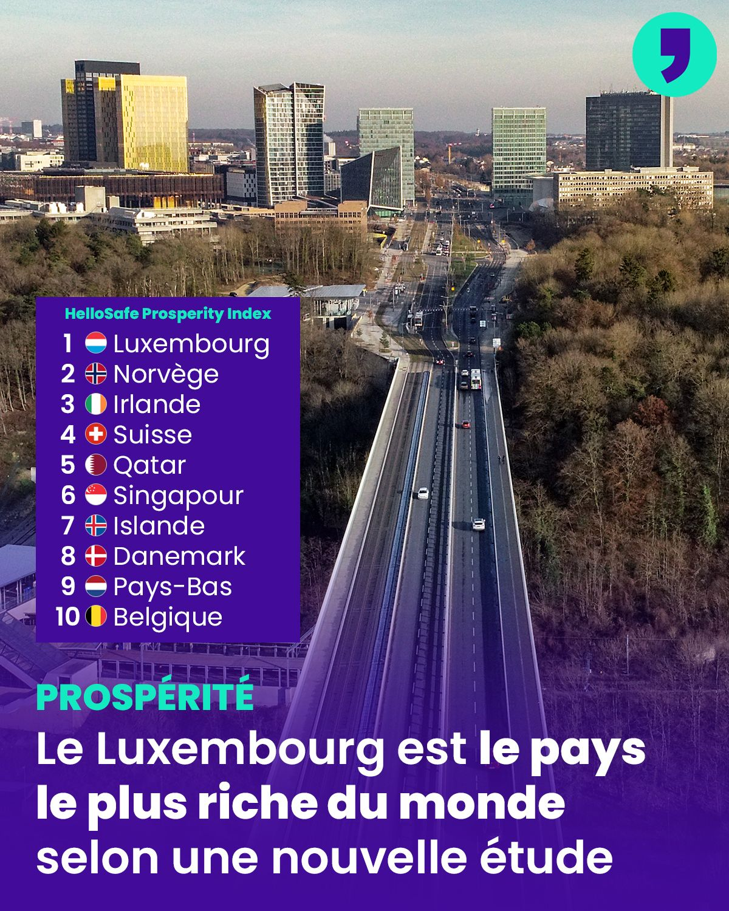

Content projection is a pattern in woch you insert or project the content you want to use inside another component
-- ----------------------------- = || Content projection Details || -- ----------------------------- = Single-slot content projection : With this type of content projection, a component accepts content from a single source. Multi-slot content projection : In this scenario, a component accepts content from multiple sources. Conditional content projection : Components that use conditional content projection render content only when specific conditions are met.
this is the example
you dont display this becaue seleciton are not defined
No omage is avaible yet.
/>Image input on estdans la template .
